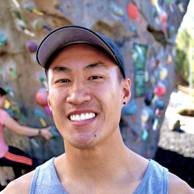
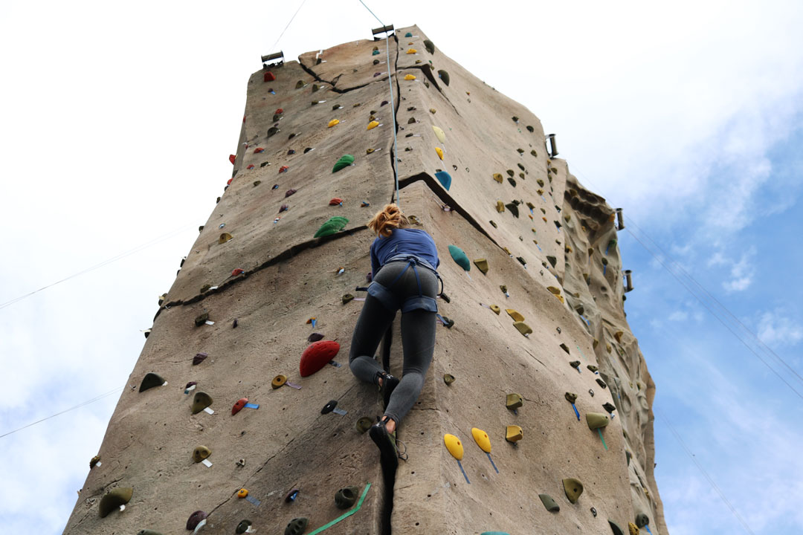
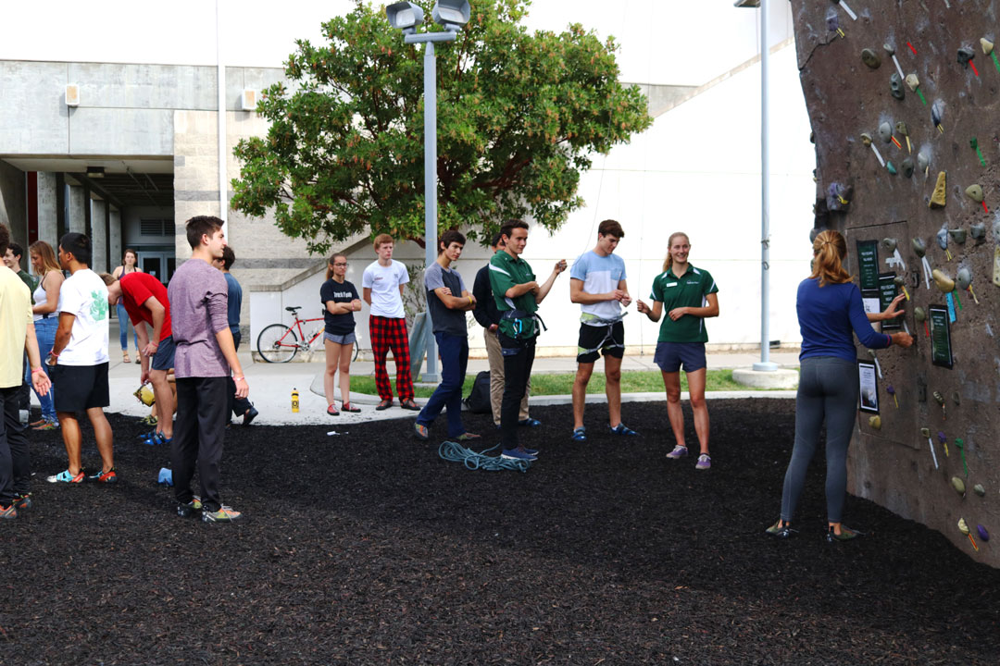
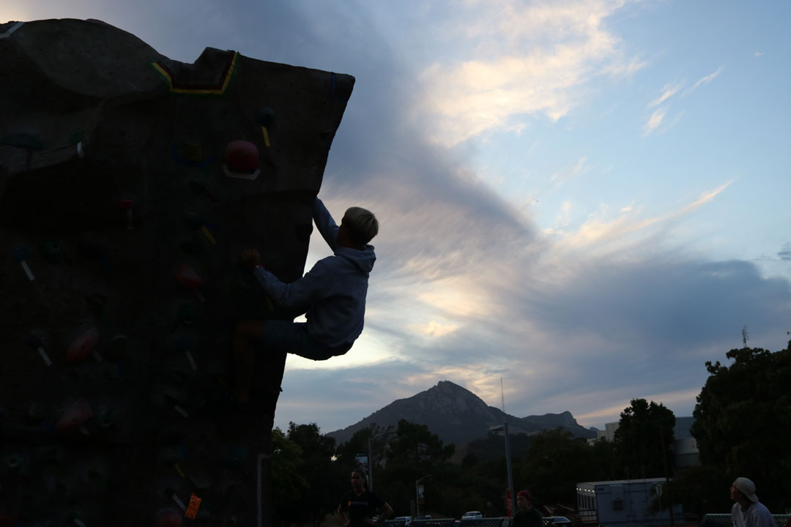
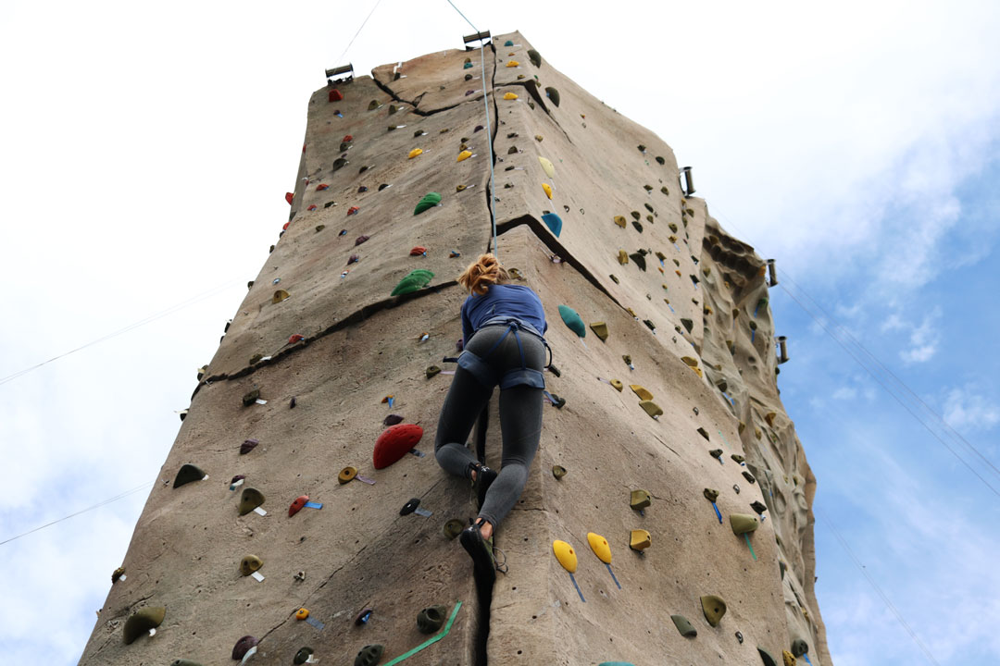
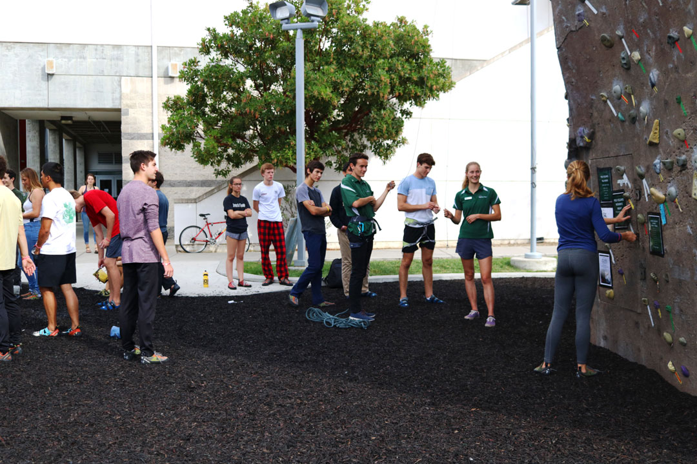
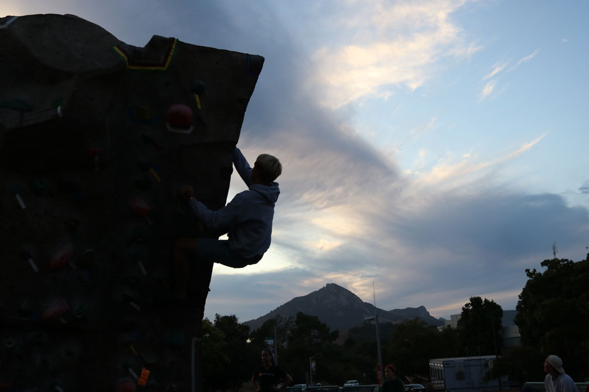

Cal Poly San Luis Obispo's campus features a climbing park right outside of the university's Recreation Center where students can partake in bouldering and belaying on two different climbing walls. Students that climb here seem to love it for several reasons. Continue on to learn a little more about climbing on campus and why so many students enjoy it.
Why Climb on Campus?
Click on images to hear why these students love to climb on campus.
(Double-click to pause audio)

/>
/>
 />
/>
/>
 




